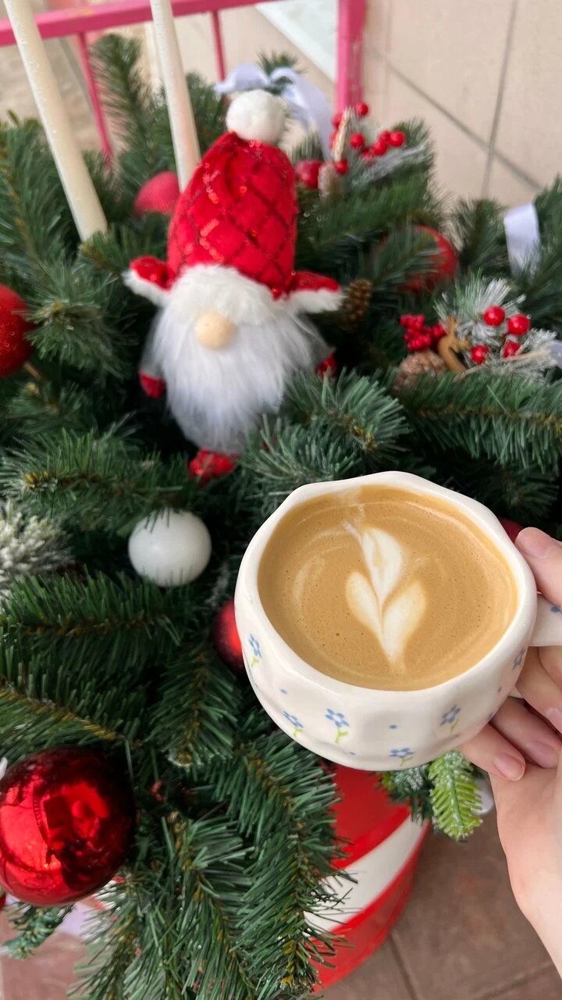
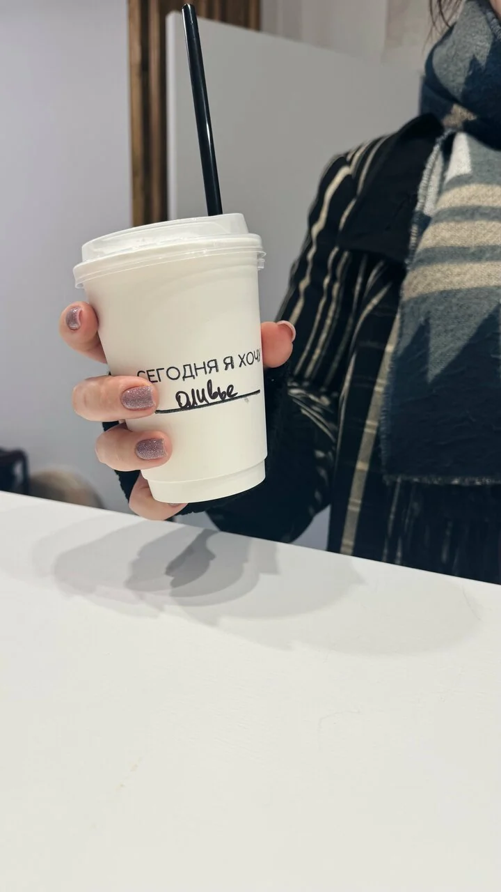
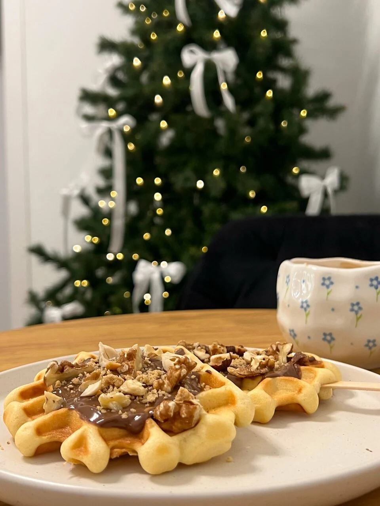
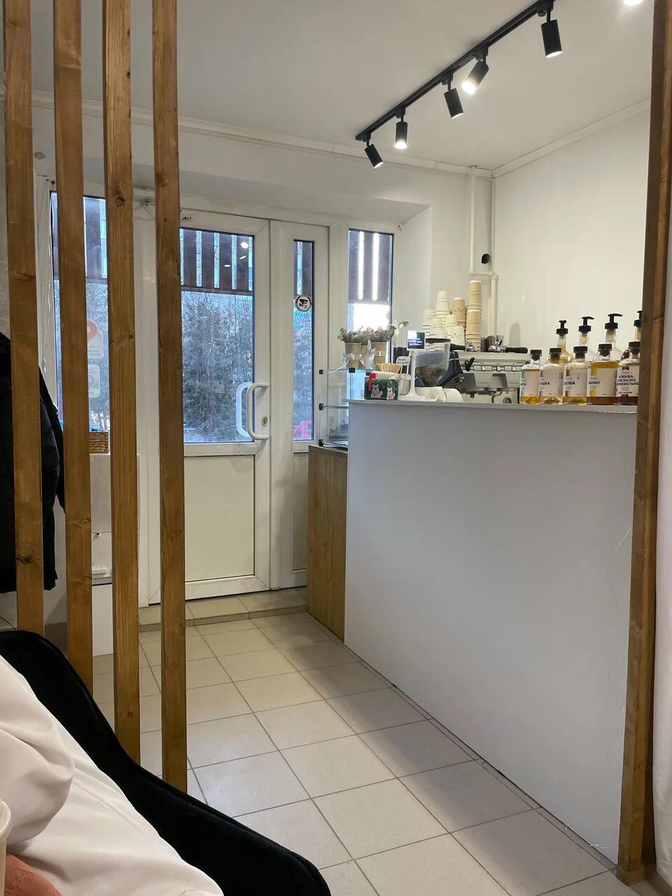

01 / 03Сначала —
Сначала —
любимый
кофе.
Тёплая чашка в руках.
И день уже немного лучше.

Загляни в Hot Cup Coffee за чашкой и хорошим настроением.

Тёплая чашка в руках.
И день уже немного лучше.

Вафли, десерт и ещё один
повод остаться.

У окна на Жуковского.
Можно просто никуда не спешить.

Место, где можно выдохнуть.
Оставайся у окна или бери кофе с собой.
«Самая любимая кофейня в городе, всегда вкусно и уютно».
Hot Cup Coffee
Луховицы, улица Жуковского, 27
Откроется карточка кофейни
в Яндекс Картах.